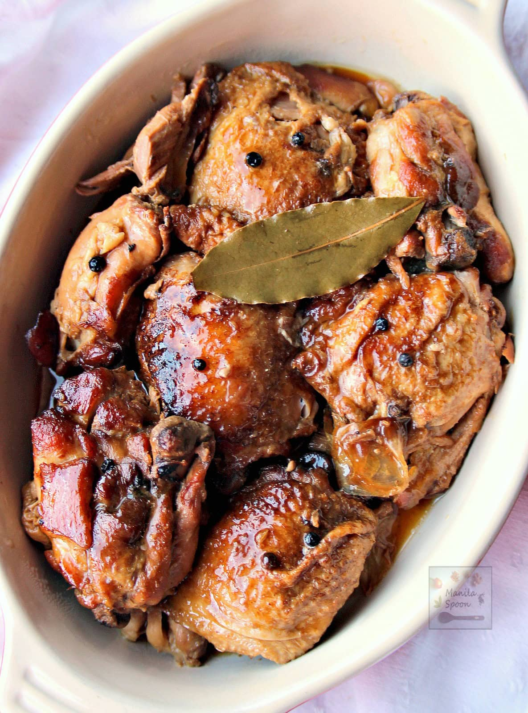

Home
Adobo

Soy sauce braised chicken
This is the version I like to cook for myself and my partner. For best results, I always marinate the meat overnight and use drumsticks or thighs or wings or a combination of these pieces.
For the ultimate Filipino taste, use Filipino brand soy sauce and vinegar. We are a Datu Puti household!
Ingredients:
- 1kg chicken drumsticks or thighs or wings or combination of parts
- Marinade (see below)
- Bayleaves
- Filipino brand vinegar
- Chicken cube
- Sugar
- Lemon
- Spring onion
- Salt and pepper to taste
- Water
- Oil
Marinade:
- Filipino brand soy sauce
- 1 tbsp whole black peppercorns
- 10-12 crushed garlic cloves
Steps:
- Place the chicken parts in a large bowl and mix thoroughly with the marinade. Leave to marinate overnight in the fridge.
- Remove the chicken an hour before cooking.
- Heat up a pan large enough to contain the chicken parts. Pour some oil and pan fry the chicken in batches to get a nice sear. Sprinkle salt and pepper to taste. Do not throw away the marinade juice.
- Once all the chicken pieces have been fried, put them all back in the pan and pour the marinade juice, along with the crushed garlic cloves and peppercorns. Stir together for a few minutes.
- Pour water and place the bayleaves into the pan. Let it come to a boil.
- Once boiling, crumble the chicken cube into the sauce. Turn down the heat to a gentle simmer.
- After 20 minutes, flip the chicken parts to ensure meat is cooked evenly. Let it continue simmering for another 10 minutes.
- Add vinegar and sugar to the pan. Let it simmer for 5 more minutes. Adjust the taste to your liking. If it is too salty, I like to add lemon to balance the flavour.
- Sprinkle spring onion for garnish.
>